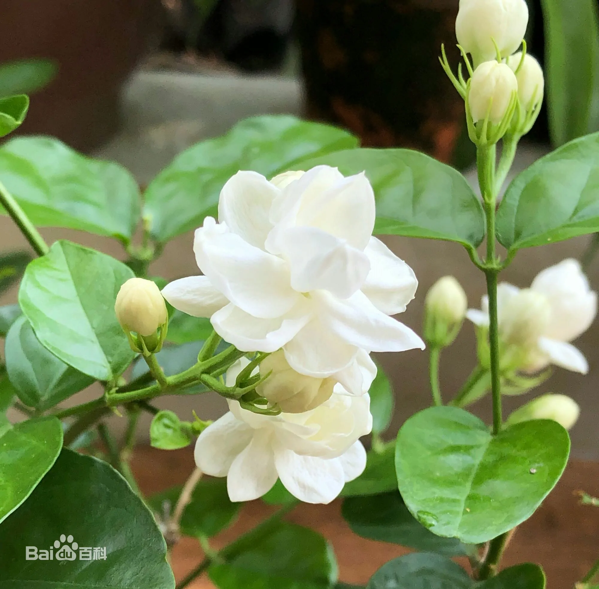

正确答案是B哦，你答对了吗
花语：茉莉花素洁、浓郁、清芬、久远，它的花语表示忠贞、尊敬、清纯、贞洁、质朴、玲珑、迷人。许多国家将其作为爱情之花，青年男女之间，互送茉莉花以表达坚贞爱情。它也作为友谊之花，在人们中间传递。把茉莉花环套在客人颈上使之垂到胸前，表示尊敬与友好，成为一种热情好客的礼节。茉莉花的花语为官能的、你是我的，因为它的香味迷人，很多人会把她当成装饰品一样地别在身上。在婚礼等庄重场合，也是一种很合宜的装饰花。也经常被使用在新娘捧花上。
小故事：唐代苏州名妓有一名妓名真娘，真娘出身京都长安一书香门第。从小聪慧、娇丽，擅长歌舞，工于琴棋，精于书画。为了逃避安史之乱，随父母南逃，路上与家人失散，流落苏州，被诱骗到山塘街“乐云楼”妓院。因真娘才貌双全，很快名噪一时，但她只卖艺，不卖身，守身如玉。其时，苏城有一富家子弟叫王荫祥，人品端正，还有几份才气。偏偏爱上青楼中的真娘，想娶她为妻，真娘因幼年已由父母作主，有了婚配，只得婉言拒绝。王荫祥还是不罢休，用重金买通老鸨，想留宿于真娘处。真娘觉得已难以违抗，为保贞节，悬梁自尽。王荫祥得知后，懊丧不已，悲痛至极。斥资厚葬真娘于名胜虎丘，并刻碑纪念，栽花种树于墓上，人称“花冢”，并发誓永不再娶。文人雅士每过真娘墓，对绝代红颜不免怜香惜玉，纷纷题诗于墓上。传说茉莉花在真娘死前没有香味，死后其魂魄附于花上，从此茉莉花就带有了香味，所以叫茉莉花又称香魂，茉莉花茶又称为香魂茶。
环科类2107-2022.3.10-T5
powered by ZH☆